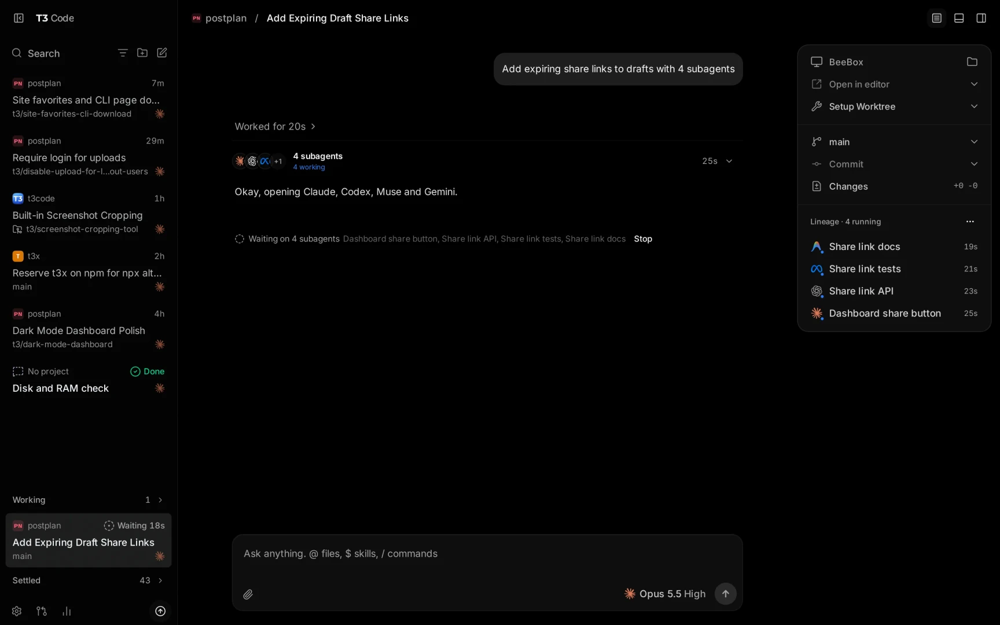

Tutorial Lengkap & Mendalam T3 Code
Ketahui bagaimana T3 Code menggabungkan kuasa Claude Team, OpenCode, dan Gemini Pro di bawah satu kokpit berkuasa tanpa membazirkan langganan sedia ada anda.
Statistik dan versi diambil dari t3.codes pada 9 November 2026.
01 Mengapa Anda Perlu T3 Code?
Bagi mereka yang telah melanggan Claude Team, OpenCode, dan Gemini Pro, soalan paling lazim ialah: "Kenapa aku perlukan perisian lain lagi? Bukankah model-model ini sudah cukup hebat?"
Laman rasmi menggambarkannya sebagai "The open-source control plane for coding agents": satu pusat kawalan untuk mengurus Claude Code, Codex, Antigravity, OpenCode, Cursor dan Grok dari satu skrin, menggunakan langganan yang anda sudah ada.
Rupa Sebenar T3 Code

t3/dark-mode-dashboard) dan status: Working, Waiting, Done.@ untuk fail, $ untuk skill, / untuk command. Pemilih model (cth. Opus 5.5 High) di sebelah kanan.Dilema Sebelum Menggunakan T3 Code
🌪️ Kekusutan Terminal
Anda membuka 3–4 tetingkap terminal berasingan: satu untuk Claude Code CLI, satu untuk OpenCode, satu lagi untuk terminal projek. Susah memantau apa yang sedang berlaku.
💥 Pertembungan Kod (Git Conflict)
Jika anda minta Claude Code buat UI, dan serentak itu minta model lain tulis unit test di folder yang sama, kedua-duanya akan menimpa kod sesama sendiri (*dirty working tree*).
🪑 Terikat Pada Meja Kerja
Jika agent anda sedang menjalankan analisis besar atau refactoring berdurasi 15 minit, anda terpaksa menunggu di hadapan PC kerana tiada cara mudah memantaunya dari telefon.
Matriks Perbandingan Mendalam
| Aspek | Cara Tradisional (CLI / Web Asing) | Dengan Kokpit T3 Code |
|---|---|---|
| Pusat Kawalan | Bertaburan di tab browser dan aplikasi terminal berasingan. | Satu UI Elegan: 6 harness (Claude Code, Codex, Antigravity, OpenCode, Cursor, Grok) diakses dari tetingkap yang sama. Model boleh ditukar di tengah-tengah thread. |
| Kos Penggunaan | Sesetengah perisian pihak ketiga mengecaj yuran langganan tambahan bulanan. | 100% Percuma & Open Source (MIT). Anda hanya menggunakan sesi login rasmi anda sedia ada (*Bring Your Own Sub*). T3 tidak menjual semula token dan tidak mengenakan had kuota sendiri. |
| Kerja Serentak (Parallel Worktrees) | Sangat berisiko merosakkan fail projek utama jika dijalankan serentak. | Sokongan Terbina Git Worktrees: Setiap thread berjalan di atas branch terasing sendiri secara automatik. |
| Semakan Kod Visual (Diff Review) | Membaca teks merah/hijau terminal yang panjang tanpa penunjuk baris jelas. | Visual Diff Inspector interaktif: Cari perbezaan kod dengan Ctrl + F, semak, dan luluskan secara berasingan. |
| Kawalan Jauh (Mobile Remote) | Perlu setup SSH atau VPN yang rumit pada telefon pintar. | Aplikasi Mobile Rasmi (iOS & Android): Imbas QR code, pantau, dan luluskan kebenaran terminal dari jauh. |
02 Konsep Teras & Mod Operasi T3 Code
Untuk menguasai T3 Code, anda perlu memahami 4 konsep asas berikut:
1. Konsep "Thread" (Bukan Sekadar Chat)
Di T3 Code, satu Thread mewakili satu unit tugasan kerja (*Job Session*). Anda boleh memiliki puluhan thread yang aktif serentak:
- Thread 1:
refactor/auth-jwt(Dijana oleh Claude Opus 5.5) - Thread 2:
docs/api-specification(Dijana oleh Gemini Pro) - Thread 3:
fix/database-leak(Dijana oleh OpenCode)
2. Mod Kebenaran (Permission Modes)
T3 Code membolehkan anda menetapkan tahap kawalan keselamatan ke atas arahan terminal dan pengeditan fail oleh AI (tekan Ctrl + Shift + A dalam thread):
| Mod | Tindakan Ejen | Bila Sesuai Digunakan? |
|---|---|---|
| Supervised | Ejen wajib meminta izin anda bagi setiap perintah terminal dan setiap fail yang ingin diubah. | Untuk kod produksi yang sensitif atau arahan yang berisiko merosakkan data. |
| Auto-accept edits | Pengeditan fail diluluskan secara automatik, tetapi perintah terminal berbahaya tetap memerlukan kelulusan anda. | Sangat sesuai untuk kerja pembangunan biasa (rapid coding). |
| Auto | Menggunakan logik keselamatan automatik provider untuk meluluskan tugas rutin. | Apabila anda mempercayai review terbina provider seperti Claude atau Codex. |
| Full access | Ejen boleh menjalankan terminal dan mengedit kod tanpa sebarang prompt pengesahan. | Untuk tugasan automasi pantas dalam persekitaran ujian (scratch project). |
3. Steer vs Queue (Mengawal Ejen Semasa Berlari)
Apabila anda menghantar mesej semasa ejen sedang sibuk memproses kod:
- Steer (Ctrl + Enter): Menghantar arahan serta-merta untuk membetulkan atau menukar arah tindakan ejen tanpa menunggu ia siap.
- Queue: Menyimpan mesej anda dalam barisan untuk diproses sejurus selepas langkah semasa selesai.
- Start in Background (Ctrl + Alt + Enter): Biarkan thread ini berjalan di latar belakang dan buka serta-merta tetingkap thread baharu untuk kerja seterusnya.
03 Persediaan: Pasang T3 Code & Sambung Langganan
Langkah A: Muat Turun & Pasang T3 Code
Pergi ke t3.codes/download dan pilih versi untuk sistem anda. Pilih saluran Stable (disyorkan); saluran Nightly untuk yang mahu cuba ciri terbaru yang mungkin belum stabil.
| Platform | Fail Pemasang | Nota |
|---|---|---|
| Windows 10 / 11 | .exe | Klik dua kali dan ikut wizard pemasangan. |
| macOS | .dmg | Apple Silicon (arm64) secara lalai. Mac Intel guna build x64. |
| Linux | .deb / AppImage | Debian/Ubuntu guna .deb. Ada juga build arm64. |
| Telefon | App Store / Google Play | Aplikasi kawalan jauh untuk iPhone, iPad dan Android (lihat bahagian 05). |
Atau pasang melalui terminal:
# Windows (PowerShell) irm https://t3.codes/install.ps1 | iex # macOS / Linux curl -fsSL https://t3.codes/install.sh | sh # Cuba sekali tanpa pasang (perlukan Node.js) npx t3@latest
irm ... | iex dan curl ... | sh menjalankan skrip terus dari internet. Gunakan hanya domain rasmi t3.codes. Kalau ragu-ragu, guna fail pemasang dari halaman muat turun atau GitHub Releases.
Langkah B: Sambungkan Langganan Sedia Ada
Anda tidak perlu memasukkan API key berbayar sekiranya anda sudah mempunyai akaun langganan. Sambungkan terus sesi peranti anda:
Claude 1. Claude Team / Pro
Jika komputer anda mempunyai Claude Code CLI, buka terminal (PowerShell atau Bash) dan jalankan:
claude auth login
Pelayar web akan dibuka untuk mengesahkan akaun Claude Team anda. T3 Code akan terus mengesan sesi ini.
OpenCode 2. OpenCode
Pastikan CLI OpenCode anda sudah dilog masuk:
opencode auth login
T3 Code berhubung terus dengan ejen OpenCode untuk delegasi tugasan.
Gemini 3. Google Gemini Pro / Antigravity
Bagi ekosistem Google / Gemini Pro, anda tidak perlukan sebarang pemasangan CLI terminal tambahan:
- Buka tetingkap Settings di T3 Code.
- Pergi ke bahagian Providers > Antigravity.
- Klik butang Install Antigravity dan Sign in with Google.
- Log masuk dengan akaun Google yang mempunyai langganan Gemini Pro / Advanced anda. Selesai!
Semua Harness Yang Disokong
Selain tiga di atas, T3 Code juga menyokong harness lain. Anda hanya perlu log masuk sekali dengan akaun yang anda sudah bayar:
| Harness | Cara Log Masuk |
|---|---|
| Claude Code | claude auth login |
| Codex CLI (OpenAI) | codex login |
| OpenCode | opencode auth login |
| Antigravity (Google) | Google sign-in dari Settings |
| Cursor | Melalui @cursor/sdk |
| Grok CLI (xAI) | grok login |
Menurut t3.codes, harness baharu ditambah setiap minggu. Semak halaman Settings > Providers dalam aplikasi untuk senarai terkini.
04 Tutorial Praktikal: Aliran Kerja Pembangunan Harian
Buka Direktori Projek Anda
Klik File > Open Folder atau pilih projek di sidebar. Semua fail projek anda akan dipaparkan di penjelajah fail.
Cipta Thread Baharu & Pilih Model Yang Tepat
Tekan Ctrl + N untuk membuka thread. Di penjuru thread, tentukan AI yang paling berpadanan dengan jenis tugasan:
- Claude (Opus 5.5 / Sonnet 5.5): Paling mantap untuk tugas pengaturcaraan logik rumit, refactoring kod sedia ada, dan debugging.
- Gemini Pro (melalui Antigravity): Paling unggul apabila anda memerlukan AI membaca keseluruhan dokumentasi projek beribu baris sekaligus (kerana tingkap konteksnya yang amat besar sehingga 1–2 juta token).
- OpenCode: Sesuai untuk pengaturcaraan pantas dan skrip automasi harian.
Tulis Arahan Yang Mempunyai Skop Jelas
Elakkan memberi arahan kabur. Sebaliknya, terangkan fail yang terlibat dan kriteria kejayaan:
Contoh Prompt Berkesan: "Aku perlukan endpoint API /api/users/export yang membenarkan admin muat turun senarai pengguna dalam format CSV. 1. Guna modul json2csv. 2. Pastikan ada check permission JWT middleware. 3. Tulis unit test dalam test/users.test.js."
Semak Diff Kod & Sahkan Perubahan
Ejen akan mencadangkan penukaran fail dan paparan *Diff Inspector* akan muncul:
- Warna Hijau: Baris kod baharu yang ditambah.
- Warna Merah: Kod lama yang dipadam.
- Gunakan kekunci Ctrl + F dalam diff inspector untuk mencari perkataan atau fungsi tertentu.
- Klik Approve untuk menyimpan kod ke dalam fail sebenar.
05 Ciri-Ciri Berkuasa Lanjutan T3 Code
🌿 1. Pengasingan Git Worktrees
Ini adalah kelebihan utama berbanding editor biasa. Tekan Ctrl + Shift + X pada thread baharu dan pilih New Worktree.
T3 Code akan mencipta salinan cawangan (*branch*) terasing di belakang tabir. Anda boleh membuka:
- Thread A: Claude membina antaramuka Tailwind baru.
- Thread B: Gemini membaiki isu schema pangkalan data.
Kedua-dua ejen menjalankan kod pada masa yang sama tanpa sebarang kemungkinan fail bertindih atau rosak!
📱 2. Kawalan Jauh Dari Telefon Pintar
Anda tidak perlu terperap di hadapan laptop sepanjang hari:
- Buka terminal komputer anda dan pasang servis latar belakang:
t3 service install
- Muat turun aplikasi T3 Code di telefon pintar anda: iOS App Store atau Google Play.
- Imbas kod QR daripada desktop anda untuk *pairing*.
- Sekarang, anda boleh berjalan keluar, minum kopi, dan tetap menerima notifikasi kelulusan perintah terus pada skrin telefon anda!
🚀 3. Commit, Push & Buka PR Dengan Satu Butang
Setiap thread ejen menulis ke branch sendiri. Bila kerja dah memuaskan, tekan Commit & push di panel Git sebelah kanan. T3 Code boleh terus buka Pull Request di GitHub tanpa anda taip arahan git di terminal:
- Tajuk dan penerangan PR dijana automatik, termasuk changelog.
- Semak diff dalam aplikasi sebelum push (butang View diff).
- Sokong Draft PR, stacked PR dan amend.
- Guna login GitHub sedia ada anda (contohnya
gh auth login).
🍴 4. Ubah Suai T3 Code Sendiri (Fork)
Oleh kerana T3 Code berlesen MIT, anda bebas fork, tukar rupa UI, tambah ejen atau alat sendiri, dan edar build anda sendiri. Kod sumber: github.com/pingdotgg/t3code.
gh repo fork pingdotgg/t3code --clone cd t3code && vp install vp run dev
Arahan di atas diambil dari laman rasmi. Ini hanya untuk pembangun yang mahu ubah kod T3 Code. Pengguna biasa tidak perlu buat langkah ini.
06 Cheat Sheet: Pintasan Papan Kekunci Penting
Tingkatkan kelajuan kerja anda dengan pintasan rasmi berikut (pada Windows guna Ctrl, pada Mac guna Cmd):
| Pintasan (Shortcut) | Tindakan / Fungsi |
|---|---|
| Ctrl + N | Membuka Thread baharu untuk tugasan pengkodan baharu. |
| Ctrl + Shift + M | Membuka menu pemilihan Model (Claude, Gemini, OpenCode, dll). |
| Ctrl + Shift + E | Melaraskan tahap pemikiran model (*Reasoning Effort* Rendah / Sederhana / Tinggi). |
| Ctrl + Shift + A | Menukar Mod Kebenaran (*Supervised*, *Auto-accept*, *Full access*). |
| Ctrl + Shift + X | Menukar strategi workspace (Pilih Checkout semasa atau cipta Worktree baharu). |
| Ctrl + Enter | Menghantar mesej sebagai arahan pembetulan segera (*Steer*). |
| Ctrl + Alt + Enter | Hantar arahan, jalankan di latar belakang, dan terus buka thread baru. |
| Ctrl + F | Mencari teks di dalam fail Diff atau carian mesej dalam thread perbualan. |
| Ctrl + 1 hingga Ctrl + 9 | Melompat pantas ke thread nombor 1 hingga 9 yang sedang aktif. |
| Ctrl + Z | Undo tindakan sidebar seperti unpin, archive, atau buang draft (dalam tempoh 5 saat). |
07 Soalan Lazim & Isu Keselamatan Sandbox
2-PROJEK)?
📌 Nota: 2-PROJEK hanyalah contoh nama folder dari laptop penulis. Folder ini tidak wujud dalam komputer anda dan bukan sebahagian daripada T3 Code. Gantikan dengan nama folder projek anda sendiri (contohnya D:\kerja\laman-web-saya atau ~/projects/app-saya).
Jawapan: Ini adalah ciri perlindungan keselamatan teras (*Sandboxed Workspace*). Apabila anda membuka T3 Code di dalam sesuatu direktori (contohnya tutorial-t3), ejen AI sengaja disekat daripada mengubah sebarang fail di luar folder tersebut. Ini memastikan AI tidak akan secara sengaja memadam, menimpa, atau mencuri maklumat peribadi di Desktop, Documents, atau pemacu (C:/, D:/) anda yang lain.
2-PROJEK)?
Mudah sahaja: Pada menu T3 Code, pilih File > Open Folder, kemudian pilih folder projek anda (dalam contoh penulis, 2-PROJEK; dalam komputer anda, ia boleh jadi apa-apa nama). Sebaik sahaja ia dibuka sebagai projek aktif, ejen AI dibenarkan mencipta dan mengedit semua fail di dalam folder tersebut tanpa sebarang masalah.
Ringkasan Nasihat Pro
Jangan anggap T3 Code sebagai pesaing kepada Claude, OpenCode atau Gemini. Sebaliknya, anggap ia seperti orkestra: Claude, Gemini, dan OpenCode adalah instrumen muzik anda yang hebat, manakala T3 Code adalah konduktornya yang menyelaraskan segalanya supaya pembangunan perisian anda menjadi 10 kali lebih pantas dan teratur.